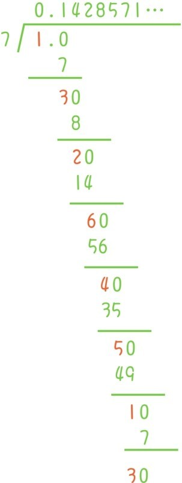

小数最早是作为特殊的分数引入的，比如0.1=，2.7=，3.14=，0.007=。这一类分数的特殊之处在于分母只能7是1，10，100，1000，10000…我们把这种长度有限的小数称为有限小数。注意自然数都可以看作小数，比如5=5.0=5.00。
比起分数，小数之间更容易比较大小，即使单独给出一个小数，人们也能更准确地把握它的大小。因此小数在现实中有更广泛的用途，比如用刻度尺测量长度的时候，结果往往都是用小数表示，超市中的许多标价也都是用小数表示，比如8.5元。
也正是基于同样的原因，人们常常需要把分数转化成小数。分数如果想转化成自然数可能会碰到余数无法平均分，但是转化成小数的时候每个余数都可以继续平均分。以为例，25平均分成4份会余出1。但是如果把1看成小数的话，它其实是10个0.1，所以还可以继续平均分，余出2个0.1，也就是0.2。0.2又可以看成是20个0.01，这时可以彻底平均分了。最终的转化结果是=6.25。类似的例子还有。
但是大部分分数，如果按照这种方式转化，余数会不断地出现，转化出来的小数也变成无限长。例如
这种无限长的小数为无限小数。在这里可以提很多问题，例如
问题18：无限小数是永远也写不完的，那这样的数真的存在吗？
问题19：哪些分数会转化成有限小数，哪些分数会转化成无限小数？
观察上面4个无限小数，会发现每个小数从某个数字开始会连续不断地重复出现一个固定的数组，比如由 转换成的小数在小数点后面会连续不断地重复出现142857，这种无限小数称为无限循环小数，把其他的无限小数称为无限不循环小数，比如
0.1010010001000010000010000001…
如果把这个无限小数中的一些0随意换成2，3，…，9，得到的仍然是无限不循环小数（你知道为什么吗），所以，无限不循环小数非常多！
如果拿更多的分数，…转化成小数，你会发现结果要么是有限小数，要么是无限循环小数。小学数学老师往往会直接告诉学生这个结论，但是好奇心强的孩子可能会问：
问题20：为什么分数总会转化成有限小数或无限循环小数？
以分数 为例解释这个问题，一个自然数被7除出现余数的时候，余数只能是1，2，3，4，5，6中的一个，所以余数只有有限多种。1除以7，如果一直除不尽的话，余数就会不断出现。但是被7除出现的余数只有有限个，所以一定会有一个余数再次出现

上面1除以7的计算过程中，一开始1就是余数。后来余数1再次出现，余数1再次出现后的计算和刚开始的计算是完全一样了，所以会发生循环现象。如果用其他分母更大的分数，例如来替换 的话，那么余数就有46种，虽然很多，但仍然是有限的。12除以47，如果一直除不尽的话，余数就会不断出现。但是只要余数是有限的，就一定会有一个余数再次出现，循环现象就一定会发生。
回答完问题20，新的问题又来了！既然每个分数都可以写成有限小数或者无限循环小数的形式，而有限小数又是特殊的分数，那么自然有人会问：
问题21：是不是所有的无限循环小数都是分数？
以0.707070707070…为例来说明。
这个数的100倍70.707070707070…减去这个数后，变成70。但是一个数的100倍减去这个数本身不正是99倍吗？所以0.707070707070…的99倍正是70，即=0.707070707070…
再回到这个结论：每个分数都可以写成有限小数或者无限循环小数的形式。既然如此，那么无限不循环小数，比如0.1010010001000010000010000001…就不是分数了？！
哎呀，数的家园迎来了一大堆新成员！在正式接纳它们之前，我们要做数的身份验证，看看它们是不是“合格”的数，有没有加减乘除运算，会不会满足五大运算律。
但是麻烦来了！有限小数和无限循环小数都是分数，可以用分数的加减乘除法则。无限不循环小数怎么办呢？如果拿两个无限不循环小数用竖式计算做加减法，可能会碰到无限次进位退位。
至于无限不循环小数做乘法竖式计算，那更是不可能了。所以在正式接纳无限不循环小数作为数的家园的正式成员之前，首先要回答这样一个问题：
问题22：如何定义小数（包括有限小数和无限小数）的加减乘除运算？
提问时间
1.11.1 将和转化为小数。
1.11.2 将无限循环小数0.370370370370370…转化为分数，用同样的方法说明1=0.99999999999…。